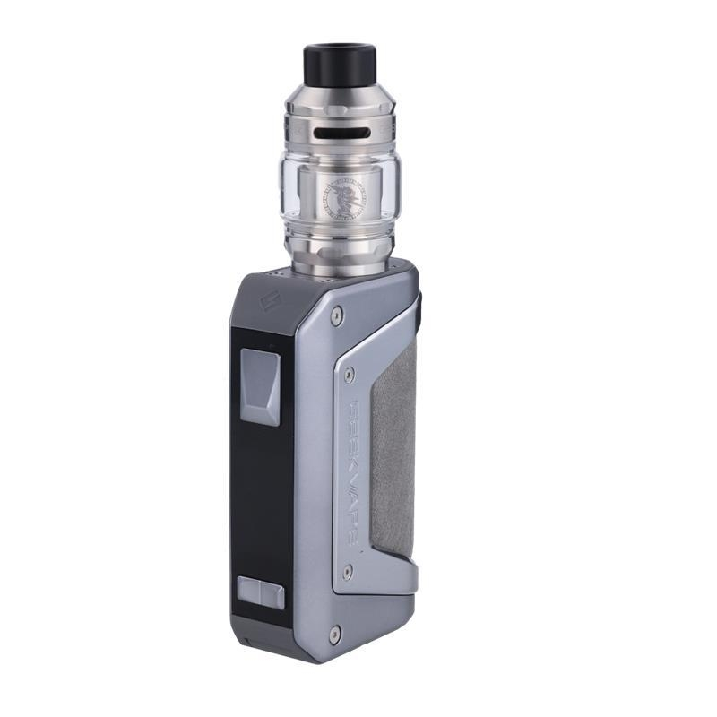
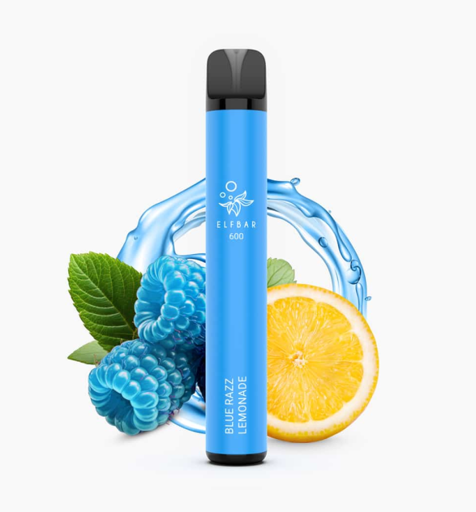

Einfluss von Vapes auf Jugendliche
Rückgang des Rauchens
Rauchen von klassischen Zigaretten wird grundsätzlich immer unbeliebter. Während in den frühen 2000er Jahren ca. die Hälfte der 12- bis 17-Jährigen schon mal geraucht haben, haben 2025 nur noch ca. 15 Prozent der 12- bis 17-Jährigen schon einmal in ihrem Leben geraucht. Auch der Anteil bei 18- bis 25-Jährigen, die schon mal geraucht haben, ist stark zurückgegangen (Statistik 1). Das ist das Ergebnis jahrelanger weltweiter Suchtprävention sowie der Anpassung und Schaffung neuer Regelungen bezüglich des Marketings zum Rauchen.
Beispielsweise müssen auf Zigarettenverpackungen oder Verpackungen anderer Tabakprodukte, aber auch auf Werbungen für diese, immer Hinweise und abschreckende Bilder zu sehen sein, welche die starken gesundheitlichen Schäden und Risiken zeigen, die das Rauchen mit sich bringt. Somit verlor Rauchen sein „cooles“ Image, welches durch jahrelange fehlende Prävention und Marketing der 50er, 60er und 70er Jahre aufgebaut wurde.
Warum Vapes Jugendliche ansprechen
Seit einiger Zeit gibt es jedoch Alternativen zu Zigaretten, die weniger gesundheitsschädliches Rauchen versprechen. Darunter zählen Tabakerhitzer wie beispielsweise IQOS, aber auch Verdampfer, die eine meistens nikotinhaltige Flüssigkeit verdampfen. Diese Verdampfer haben sich zu den Vapes entwickelt, die wir heute kennen. Sie funktionieren genau gleich wie die altmodischen Verdampfer, jedoch findet man sie heutzutage mit knalligen Farben in den verschiedensten Designs, zum Beispiel Elfbar. Zudem gibt es sie in den verschiedensten Geschmacksrichtungen wie Kirsche, Wassermelone oder anderen Früchten.
Das bunte Marketing spricht vor allem Jugendliche an, welche besonders anfällig sind, schlechte Gewohnheiten oder Abhängigkeit zu entwickeln. Vapes haben gegenüber dem Rauchen weitere Vorteile. Man muss sie nicht anzünden, sie stinken nicht und haben häufig tausende von Zügen. Das heißt, man kann bequem und immer zwischendurch daran ziehen, ohne danach zu stinken oder ein Feuerzeug dabei haben zu müssen. Vapen zu verheimlichen ist somit sehr leicht, was auch in Schulen zum Problem wird. Viele nutzen Toilettenpausen als Vorwand, um kurz den Suchtdruck zu stillen und zu vapen.
Risiken und Verbreitung
Vapes vermarkten sich zudem mit dem Image, wesentlich gesünder als Zigaretten zu sein. Das Problem ist jedoch, dass man noch nicht genügend Langzeitstudien hat, welche die gesundheitlichen Konsequenzen vom Vapen in ihrem vollen Ausmaß zeigen. Fakt ist jedoch, dass Vapen absolut nicht unschädlich ist. Neben den Risiken, die Nikotin selbst mit sich bringt, sind in vielen Liquids Schwermetalle enthalten, welche schwere gesundheitliche Folgen im Körper haben können. Zudem kann man nicht genau sagen, was in den Liquids an Stoffen enthalten ist, da die meisten Vapes aus China importiert werden und kaum Kontrollen oder Richtlinien existieren, welche die Zusammensetzung der Liquids beschränken oder überprüfen.
Was man jedoch sicher sagen kann, ist, dass Vapes bei Jugendlichen gut ankommen und sich in den letzten Jahren immer weiter verbreitet haben. Laut den Drogenaffinitätsstudien 2023 und 2025 ist der Konsum von Zigaretten in den letzten 25 Jahren zwar zurückgegangen, jedoch ist der tägliche Konsum von Vapes in den letzten 5 Jahren vor allem unter Jugendlichen deutlich gestiegen (Statistik 2). Das liegt auch an der einfachen Verfügbarkeit von Vapes auch für Minderjährige. In so gut wie jedem Kiosk findet man Vapes in großer Stückzahl, viele kontrollieren nicht immer. Zudem existiert ein großer Schwarzmarkt für Vapes und man kriegt unter der Hand, beispielsweise auf Partys, sehr leicht welche angeboten.
Somit wird die aktuelle Generation die nächste Generation Nikotinabhängiger, nur dass statt Zigaretten Vapes geraucht werden. Zudem rauchen viele Vaper später auch Zigaretten; viele bleiben ihr Leben lang abhängig, wie bereits in dem Text über die Nikotinabhängigkeit erläutert.

